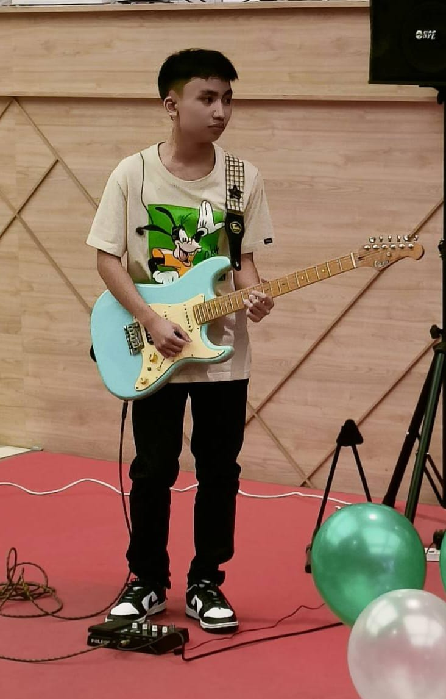

ชื่อ: สิรธีร์ ธรรมนิต ชื่อเล่น: กาโตว์
อาหารที่ชอบ: พิซซ่า งานอะดิเรก: เล่นเกมและกีฬา
ระดับอนุบาลถึงมัธยมศึกษาปีที่3: โรงเรียนอันนาลัย
ระดับมัธยมศึกษาตอนปลายปีที่4-6: โรงเรียนอัสสัมชัญ
-เล่นกีตาร์

-ได้รับรางวัลรองชนะเลิศอันดับ2ของการแข่งขันvalorant